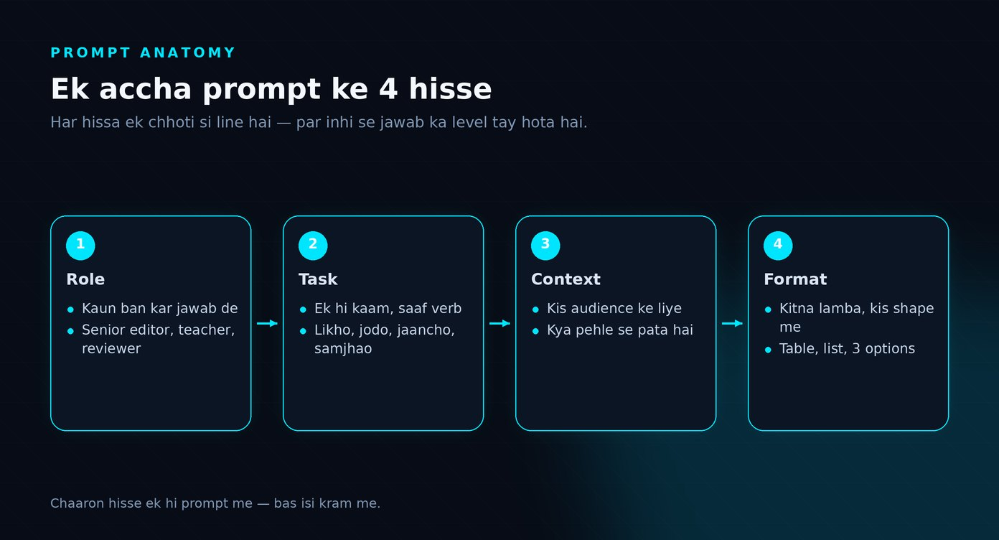
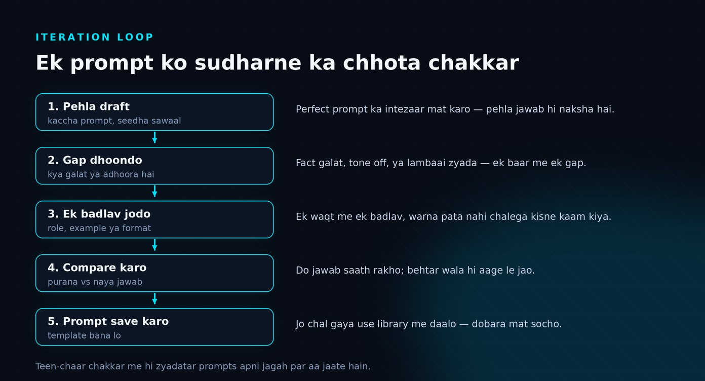

Prompt Engineering Kya Hai? 12 Techniques Jo Kaam Karte Hain
अगर आपने कभी AI से एक ऐसा जवाब पाया जो सही लग रहा था पर काम का नहीं था, तो गलती model में नहीं, सवाल पूछने के तरीके में थी। Prompt engineering का मतलब यही है — AI को वही बताना जो वह खुद से नहीं जान सकता: काम क्या है, किसके लिए है, किस रूप में चाहिए, और किस हद तक जाना है। यह कोई coding language नहीं है, न कोई secret trick; यह साफ़ लिखने की आदत है जिसे कोई भी एक शाम में सीख सकता है।
इस guide में मैं वही बताऊँगा जो रोज़ के काम में चलता है: एक prompt के चार हिस्से, 12 techniques जो सच में फर्क लाती हैं, एक कच्चे prompt को चार कदमों में सुधारने का उदाहरण, हिंदी में prompt लिखने के चार tips, और वे पाँच जगहें जहाँ prompt engineering काम नहीं करती — चाहे आप कितना अच्छा लिख लें।
छोटा जवाब: Prompt engineering एक अच्छा निर्देश लिखने की कला है — role, task, context और format. इसका काम model को होशियार बनाना नहीं, बल्कि उसकी गुंजाइश कम करना है ताकि वह वही करे जो आप चाहते हैं। जब जवाब काम का न आए, तो model बदलने से पहले prompt में वह जानकारी जोड़ें जो आपने दिमाग़ में सोची थी पर लिखी नहीं थी।
Prompt engineering क्या है — और क्या नहीं
Prompt वह text है जो आप model को भेजते हैं। उसमें आपका सवाल, ज़रूरी background, output का format और कभी-कभी examples होते हैं। Prompt engineering का मतलब है इन चीज़ों को इस तरह रखना कि model का जवाब पहली बार में ही इस्तेमाल लायक हो।
यह तीन चीज़ें नहीं है। पहला — यह जादुई शब्दों की list नहीं है। "Act as a world-class expert" लिखने से जवाब जादू से बेहतर नहीं हो जाता; फर्क तब पड़ता है जब आप बताते हैं कि expert किस चीज़ का है और किस हद तक जानकारी दे। दूसरा — यह model को धोखा देने का तरीका नहीं है। जो जानकारी model के पास नहीं है, वह prompt से नहीं आएगी; उसके लिए आपको document देना होगा या search tool जोड़ना होगा। तीसरा — यह एक बार का काम नहीं है। जो prompt अच्छा चला, उसे सँभालकर रखना और हर महीने सुधारना ही असली कौशल है।
एक उदाहरण से फर्क साफ़ होगा। कच्चा prompt: "blog post likho AI par." जवाब आएगा — ढेर सारा सामान्य text, जो किसी काम का नहीं। सुधरा हुआ prompt: "आप एक tech blog के editor हैं जो Hindi में पढ़ने वाले 25–35 साल के professionals के लिए लिखते हैं। 900 शब्दों में बताएँ कि छोटी team AI को रोज़ के काम में कैसे लाए, 3 उदाहरण और एक table के साथ। सिर्फ़ वही बातें लिखें जो 2025 के बाद के tools पर लागू हों।" दूसरे prompt में model के पास चुनने की गुंजाइश कम है — इसलिए जवाब भी काम का आता है।
एक अच्छे prompt के चार हिस्से
लंबे prompt याद रखने की ज़रूरत नहीं। चार चीज़ें लिख दें और 80% काम हो जाता है।

1. Role — कौन बनकर जवाब देना है
Role model को बताता है कि किस नज़रिए से सोचना है। "आप एक CA हैं" और "आप एक marketing manager हैं" — दोनों को एक ही sales number देखकर अलग बातें दिखेंगी। पर role को काम से जोड़ें, न कि बड़ा-बड़ा विशेषण लिखें। "आप एक experienced teacher हैं जो 10वीं के students को maths samjhate hain" काम का role है; "आप दुनिया के सबसे बड़े genius हैं" नहीं।
2. Task — एक साफ़ काम, एक साफ़ verb
एक prompt में एक मुख्य काम रखें। "Summary banao, translation karo, SEO title do aur hashtag bhi nikaalo" — चार काम एक साथ देने पर model हर काम आधा-अधूरा करता है। अलग-अलग prompts में बाँटें, या साफ़ लिखें कि पहले summary, फिर उसी के अंदर से title। Verb साफ़ रखें: likho, jodo, jaancho, tulo, samjhao, chhoto karo।
3. Context — जो आपको पता है, वह भी लिखें
यही हिस्सा सबसे ज़्यादा छूटता है और सबसे ज़्यादा फर्क लाता है। किसके लिए लिखा जा रहा है, पहले क्या हो चुका है, क्या मना है, कितना data उपलब्ध है, किस देश या market की बात है — ये सब context हैं। मेरी आदत है कि prompt में तीन लाइनें हमेशा लिखता हूँ: audience, पिछला हाल, और पाबंदी।
4. Format — जवाब किस shape में चाहिए
"अच्छे से likho" कहने से model अपना मनपसंद format चुनता है। इसलिए साफ़ बताएँ: 5 bullet points, 200 शब्द, एक table जिसमें तीन column हों, या JSON जिसमें चार keys हों। Format बताने से दो फायदे होते हैं — जवाब सीधे इस्तेमाल हो जाता है, और model को सोचने का ढाँचा मिल जाता है।
12 techniques जो सच में काम करती हैं
नीचे की table में वही techniques हैं जो मैं रोज़ इस्तेमाल करता हूँ। हर एक के साथ यह भी लिखा है कि कब लगानी है, ताकि आप सबको एक साथ ठूँसने की गलती न करें।
| # | Technique | कब लगाएँ |
|---|---|---|
| 1 | Role + audience | जब tone या गहराई तय करनी हो |
| 2 | एक prompt, एक काम | जब जवाब आधा-अधूरा आ रहा हो |
| 3 | Context देना | हमेशा — यह सबसे सस्ता सुधार है |
| 4 | Output format | जब जवाब सीधे कहीं चिपकाना हो |
| 5 | 2–3 examples (few-shot) | जब style match करना मुश्किल हो |
| 6 | Step-by-step सोच | जब calculation या logic हो |
| 7 | Negative constraints | जब model बार-बार वही गलती करे |
| 8 | दो पास — draft फिर polish | जब लंबा लेखन चाहिए |
| 9 | पहले सवाल पूछने दें | जब काम में कई अनजान चीज़ें हों |
| 10 | लंबाई और गहराई की सीमा | जब जवाब बहुत लंबा आता हो |
| 11 | Rubric देना | जब quality नापनी हो |
| 12 | Template और version | जब वही काम बार-बार आता हो |
1–2. Role और एक ही काम
इन दोनों का काम एक ही है — model के विकल्प कम करना। जब model के पास 20 रास्ते होते हैं, तो वह कोई एक चुन लेता है; जब दो रास्ते हों, तो वह वही चुनता है जो आपके context में सही है। इसीलिए "जो सबसे अच्छा लगे वह करो" जैसी लाइनें हटा दें और साफ़ लिखें कि output में क्या होना चाहिए।
3–4. Context और format
Context की एक अच्छी परख है: अगर आपका prompt किसी नए colleague को दे दें और वह बिना सवाल किए काम कर ले, तो prompt ठीक है। Format के लिए एक line काफ़ी है — "3 column की table: problem, cause, fix" या "शुरुआत 40 शब्दों के summary से, फिर 5 bullet".
5. Examples देना
अगर आपको एक खास tone चाहिए — जैसे आपकी company का email style — तो दो असली examples prompt में चिपका दें। Model pattern पकड़ लेता है। यह किसी भी adjective से बेहतर काम करता है; "professional tone" से ज़्यादा ताकतवर है आपके भेजे हुए दो emails का copy।
6. Step-by-step सोचने देना
जहाँ गिनती, तुलना या logic है, वहाँ model से कहें कि पहले कदम लिखे, फिर नतीजा। इससे गलती पकड़ना आसान हो जाता है, क्योंकि आप देख सकते हैं कि वह कहाँ फिसला। पर ध्यान दें — हर साधारण सवाल पर यह माँगना सिर्फ़ जवाब लंबा करता है।
7. जो नहीं चाहिए, वह भी लिखें
"No fluff, no emoji, no invented numbers, किसी ऐसे tool का नाम मत दो जो मैंने नहीं दिया" — ऐसी lines model को सीमा में रखती हैं। खासकर जब आपको ऐसा जवाब चाहिए जो कानूनी, medical या financial जैसे संवेदनशील काम में जाए, तब "जो पता न हो तो साफ़ कहो कि पता नहीं" जोड़ना ज़रूरी है।
8. दो पास में काम कराएँ
पहले prompt से सिर्फ़ outline या कच्चा draft लें। फिर दूसरे prompt में वही draft डालकर कहें — "इसे छोटा करो, repetition हटाओ, पहला paragraph फिर से लिखो". एक ही prompt में "likho aur perfect bhi karo" कहने से model दोनों काम अधूरे करता है।
9. पहले सवाल पूछने दें
बड़े काम में शुरुआत में ही लिखें: "जवाब देने से पहले 3 सवाल पूछो जिनके बिना तुम सही जवाब नहीं दे सकते." जब मैं किसी नए project का plan बनवाता हूँ, यह line अकेले ही आधा काम कर देती है — क्योंकि model वही अनजान चीज़ें पूछता है जिन्हें मैं लिखना भूल गया था।
10. लंबाई की सीमा
"300 शब्द" लिखना "short likho" से बेहतर है। साथ में यह भी बताएँ कि लंबाई किस चीज़ में जाए — explanation में, examples में, या steps में। वरना model शब्द तो पूरे कर देगा, पर वही बात तीन तरीक़े से दोहराकर।
11. Rubric — अपनी जाँच का पैमाना
Rubric का मतलब है वे तीन-चार चीज़ें जिन पर आप जवाब नापेंगे, जैसे "क्या हर दावे का कारण है, क्या कोई number बिना source के नहीं है, क्या हर section 120 शब्द से छोटा है". आप यही rubric model को दे सकते हैं और उससे कह सकते हैं कि जवाब देने से पहले खुद इन चारों पर जाँच करे।
12. Template बनाकर रखें
जो prompt अच्छा चला, उसे कहीं save करें — नाम के साथ, जैसे "weekly-report-v3". छोटी टीम में यह एक shared file होनी चाहिए। जब model या tool बदले, तो पुराना template फिर चलाकर देखें; कई बार छोटा सुधार काफ़ी होता है।
एक कच्चे prompt को चार कदमों में सुधारना
मान लीजिए काम यह है — "client ko project delay ka email likhna hai". पहला प्रयास: "email likho ki project late ho raha hai." जवाब आता है — एक ठंडा, सामान्य email जो भेजने लायक नहीं।

- Context जोड़ें: "client को 10 दिन की देरी बतानी है, कारण है third-party API की approval. हमने पहले ही 2 हफ्ते बचाने की कोशिश की है."
- Tone तय करें: "शुरुआत में सीधे माफ़ी, बीच में कारण, अंत में नया timeline और अगला कदम. भावुक न हों, बहाना न बनाएँ."
- Format दें: "180 शब्द, 3 छोटे paragraph, कोई bullet नहीं, subject line अलग से."
- जाँच माँगें: "भेजने से पहले बताओ कि इसमें कौन सी line client को और नाराज़ कर सकती है."
चौथे कदम के बाद जवाब अक्सर भेजने लायक हो जाता है। और ध्यान दें — मैंने model नहीं बदला, सिर्फ़ वह जानकारी दी जो मेरे दिमाग़ में थी। यही prompt engineering का पूरा सार है।
हिंदी में prompt लिखने के चार tips
देवनागरी में लिखें, तो tone ठीक आता है। जब मैं हिंदी post के लिए prompt देवनागरी में लिखता हूँ, जवाब की भाषा ज़्यादा natural आती है। Hinglish prompt से जवाब भी Hinglish आता है — जो कई बार अच्छा है, पर हिंदी article के लिए नहीं।
Technical शब्द अंग्रेज़ी में ही रहने दें। "cache" को "संचय" बनाने से पाठक उलझ जाता है। prompt में साफ़ लिखें: "तकनीकी शब्द अंग्रेज़ी में रखें, वाक्य हिंदी में."
अनुवाद नहीं, मूल लेखन माँगें। अगर आप अंग्रेज़ी draft को हिंदी में बदलवाते हैं, तो वह अनुवाद जैसा लगता है। बेहतर है कि पहले हिंदी में ही लिखवाएँ और फिर उसी को सुधारें।
औपचारिकता की मात्रा बताएँ। "आप" चाहिए या "तुम", emoji चाहिए या नहीं, "कृपया" जैसे शब्द चाहिए या नहीं — ये छोटी चीज़ें पूरे tone को बदल देती हैं। एक line में लिख दें, बाद में सुधारने की ज़रूरत नहीं पड़ेगी।
जहाँ prompt engineering काम नहीं करती
जब जानकारी model के पास ही न हो। आप अपने company के internal numbers, नई policy या आज के stock price prompt में लिखे बिना नहीं पा सकते। उसके लिए document दें, database जोड़ें या search कराएँ — यही वजह है कि बड़ी companies RAG (retrieval) पर जाती हैं, और यह चुनाव का तरीका मैंने RAG vs fine-tuning वाली guide में विस्तार से लिखा है।
जब काम में असली फैसला लेना हो। Medical, legal, hiring reject या loan approve — इन जगहों पर prompt कितना भी अच्छा हो, आख़िरी फैसला इंसान का होना चाहिए। Model की भूमिका तैयारी करने वाली रखें, फैसला लेने वाली नहीं।
जब prompt बहुत लंबा हो जाए। हर model की एक context limit होती है, और लंबे prompt में बीच की instructions दब जाती हैं। मैंने यह भी देखा है कि 400 शब्दों के prompt से बेहतर 150 शब्दों का साफ़ prompt चलता है। लंबाई का हिसाब समझने के लिए tokens और context window वाली पोस्ट पढ़ लें।
जब बाहर का text अंदर आ रहा हो। अगर आपकी app किसी user का text या किसी website का content model को देती है, तो उसमें छिपी instruction आपके prompt को हरा सकती है। ऐसे text को हमेशा "data" की तरह रखें, निर्देश की तरह नहीं, और खतरनाक कामों से पहले मंज़ूरी रखें।
पाँच prompts जो मैं बार-बार इस्तेमाल करता हूँ
1. Meeting notes से action items: "नीचे बैठक के notes हैं. हर action item को table में निकालो: काम, मालिक, deadline, निर्भरता. जो चीज़ notes में साफ़ नहीं है उसे 'अस्पष्ट' लिखो, अनुमान मत लगाओ."
2. लंबे document का summary: "इस document को पढ़कर 5 बिंदु दो — हर बिंदु में वह बात जो फैसला बदल सकती है. फिर 2 ऐसी बातें लिखो जो document में नहीं हैं पर पूछनी चाहिए."
3. Code review: "इस function में 3 चीज़ें ढूँढो: bug, performance की समस्या, और वह जगह जहाँ error handle नहीं हुआ. हर बिंदु पर line number और सुधार लिखो."
4. Decision memo: "दो विकल्पों की तुलना table में करो — लागत, समय, जोखिम, वापसी का रास्ता. अंत में एक paragraph में बताओ कि किस स्थिति में कौन सा विकल्प सही है."
5. Post का outline: "इस topic पर 7 H2 वाला outline बनाओ जिसमें पहला section सीधा जवाब दे. हर section के नीचे 2 lines लिखो कि उसमें क्या आएगा — कोई पूरा paragraph नहीं."
मेरा अनुभव
शुरुआत में मैं भी हर नए tool के "best prompts" वाली list इकट्ठा करता था। फिर एक हफ़्ते तक अपने असली काम के prompts लिखकर देखा और पता चला कि 90% फर्क सिर्फ़ तीन चीज़ों से आया — audience साफ़ लिखना, output का format बताना, और यह कहना कि "जो पता न हो तो मत बनाओ". बाकी सब techniques इन्हीं के आसपास घूमती हैं।
दूसरी बात जो मैंने सीखी: prompt को code की तरह रखें। नाम दें, बदलाव की तारीख़ लिखें, और जब जवाब खराब आए तो पहले पुराना version चलाकर देखें। कई बार समस्या prompt में नहीं, model के update में होती है — और तब पता होना चाहिए कि क्या बदला।
तीसरी बात, जो सबसे ज़्यादा मायने रखती है: prompt लिखना असल में अपनी सोच साफ़ करना है। जब मैं prompt ठीक से नहीं लिख पाता, तो अक्सर वजह यह होती है कि मुझे खुद नहीं पता कि output कैसा चाहिए। ऐसे में model बदलने से कुछ नहीं होता — पहले कागज़ पर तय करना पड़ता है।
नतीजा
Prompt engineering कोई रहस्य नहीं, चार लाइनों की आदत है — role, task, context, format — और ऊपर से एक जाँच। 12 techniques में से शुरुआत में सिर्फ़ तीन लगाएँ: audience लिखें, format बताएँ, और model को अनुमान लगाने से रोकें। जब वही काम रोज़ आने लगे, तो उसे template बना दें। बाकी सब iteration है, और iteration के लिए धैर्य चाहिए — जो AI के साथ काम करने की सबसे ज़रूरी आदत है।
अक्सर पूछे जाने वाले सवाल
क्या prompt engineering सीखने के लिए coding आनी चाहिए?
नहीं। लिखना और सोच साफ़ होना काफ़ी है। Coding तब काम आती है जब आप prompt को API से अपनी app में जोड़ते हैं।
क्या लंबा prompt हमेशा बेहतर होता है?
नहीं। 150 शब्दों का साफ़ prompt अक्सर 500 शब्दों के उलझे prompt से बेहतर चलता है। लंबा prompt तभी लिखें जब उसमें नई जानकारी या examples जुड़ रहे हों।
अंग्रेज़ी में prompt लिखूँ या हिंदी में?
जिस भाषा में जवाब चाहिए, उसी में लिखें। हिंदी output के लिए हिंदी prompt बेहतर tone देता है, और तकनीकी शब्द अंग्रेज़ी में रखने की line जोड़ दें।
एक prompt कितनी बार सुधारना चाहिए?
दो-तीन चक्कर काफ़ी हैं। अगर तीन बदलाव के बाद भी जवाब काम का नहीं, तो समस्या prompt की नहीं — जानकारी की है, या काम ही model के लिए सही नहीं है।
क्या prompt चुराने से काम बिगड़ सकता है?
Prompt में अक्सर internal जानकारी होती है — client के नाम, process, numbers. इसे public tools में चिपकाने से पहले साफ़ करें, और company की policy देखें।